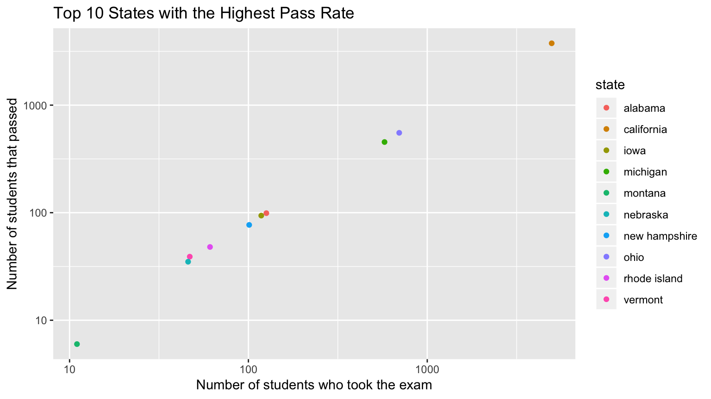
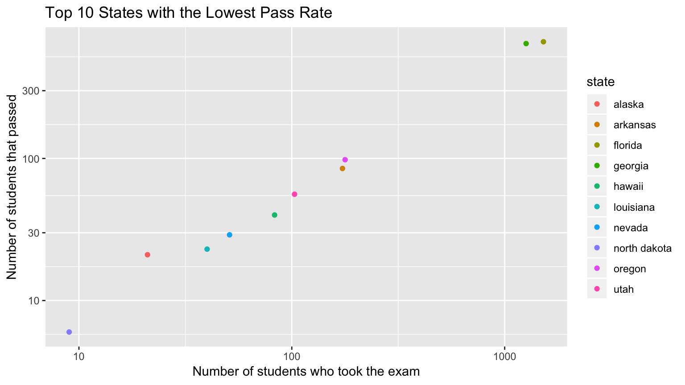

Students who attend private schools usually have smaller class sizes1, which means they can be given more individual attention by the teacher than students in large class sizes. Those who can afford tuition are also more likely to be able to afford outside tutors if they need them.
AP courses have been known to be more concentrated in higher income counties, resulting in a push to implement more courses in low-income areas. Middle and high-income students are three times more likely to enroll2 in at least one AP courses if offered at their school. Many enroll in the course aware of the costs that lie ahead, specifically the opportunity costs and cost of taking the exam at the end. When enrolling in AP courses, students see it as an automatic opportunity to gain college credit and hopefully save money down the line. In reality, that is not always the case, and some schools do not accept AP scores for credit without a supplemental exam while others just use the credit towards introductory courses.
Going back to the cost of taking an AP exam, the college board offers fee waivers, but many students are unaware of this. Some students, aware of the fee waiver, still do not have the funds to pay the remaining balance of $53 per exam3. The marketing of AP exams itself poses additional problems, as the benefits overwhelmingly target low income students. The College Board boasts that AP exams can help students save money on college credits and boost college applications4, which are major pulls for those at an economic disadvantage. Yet, at the same time, these students have been shown to struggle the most with AP scores; coupled with the current $53-94 per exam price tag, it seems that low-income students are at a systematic disadvantage.

We selected the top 10 states with the highest pass rates on the AP computer science exam. In total, these 10 states had 6,758 students actually taking the exam, with 5,181 students earning a pass score. This constitutes to an over 76% pass rate in this states alone. Alaska was a rarity in the fact that 100% of the 21 students who took the exam passed. California, out of all 50 states, had the largest number of students take and pass the exam. As we mentioned earlier, this is not unexpected due to the size of California and the booming tech industry fueled by Silicon Valley, resulting in a medium income of $94,5725, resulting in an increased fascination towards the tech industry. Another thing to note, is the reputation for public schools in California is not the greatest. Many parents as a result choose to send their kids to private schools, which tend to have more established AP programs. Vermont, a state with the second smallest population in the US, had a pass rate of over 82%, keeping in mind only 47 students took the exam.

Next, we selected the 10 states with the lowest pass rates on the AP computer science exam. In total, these 10 states had 3,454 students actually taking the exam, with 1,644 students earning a pass score. This constitutes to a pass rate just shy of 48%. One of states included in this count was South Dakota, that recorded that 33 students completed the exam but failed to mention how many actually passed. Out of all the states, Montana had the lowest number of students take the exam, with only 11 and only 6 passed. Florida, with the third highest population in the US, had a pass rate of only 43% and Georgia, with the eight highest population in the US, having a pass rate of 51%. Two of the largest states in the country, and only one managed to earn a pass rate over 50 percent, specifically a state with one the country best technical institutes.
The data for the AP Computer Science courses was gathered by The Institute for Computing Education at Georgia Tech and was originally from the AP Data Overview from College Board. It included information on the number of females, black, and hispanic students who took and who passed the exam by state and by year. There was some missing data from South Dakota, Mississippi, and zero people from Wyoming took the test.
The income data came from the US Census so it is describing the income levels in 2010. This is a 3 year difference from when the AP Computer Science data was collected, but we don’t think it should affect the data. It includes the percents of different income levels by state.
Some sources of error could have come from certain states having less people take the test depending on the population or the focus on technology. For example, California had almost 5,000 people take the test which isn’t surprising because it is so focused on the tech industry. Or Georgia had a lower percentage of people pass the test than Alabama but had 1261 take the test versus Alabama which had 126 take the test.
Public Schools and Private Schools: How do they Differ?, National Center for Education Statistics, July 1997.↩
Number of AP Test-Takers Continue to Rise, Education Week, February 28, 2017.↩
Work Toward College Success, AP College Board.↩
Work Toward College Success, AP College Board.↩
Silicon Valley median income now $94,572 — 43% higher than the typical U.S. household, Silicon Valley Business Journal, September 25, 2014.↩